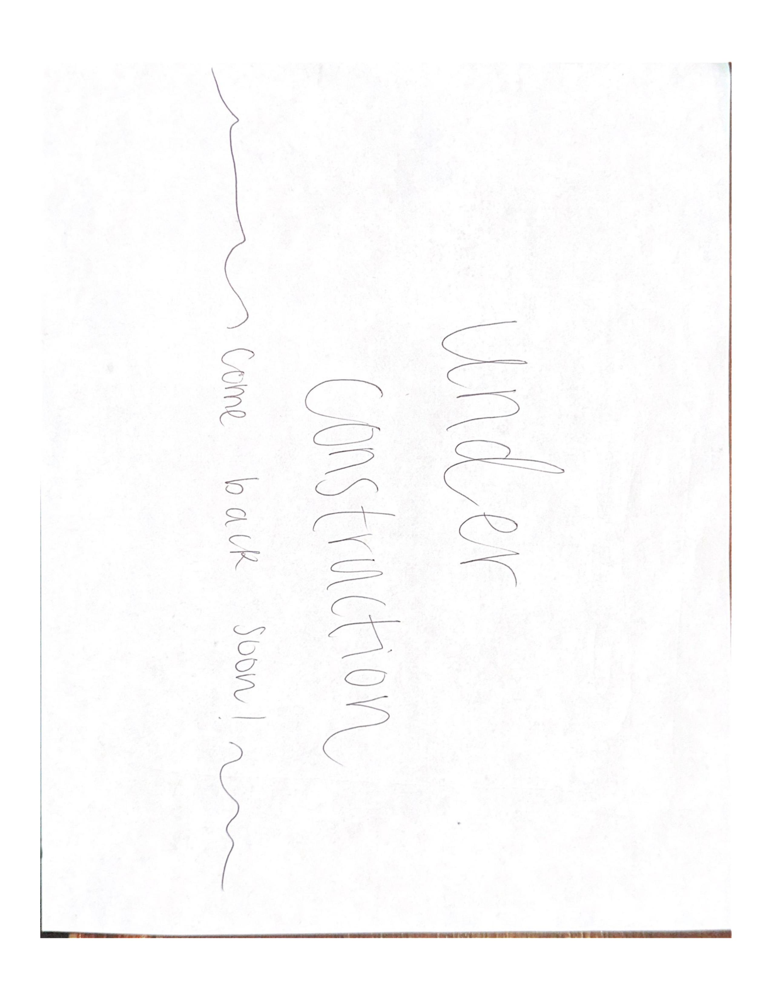
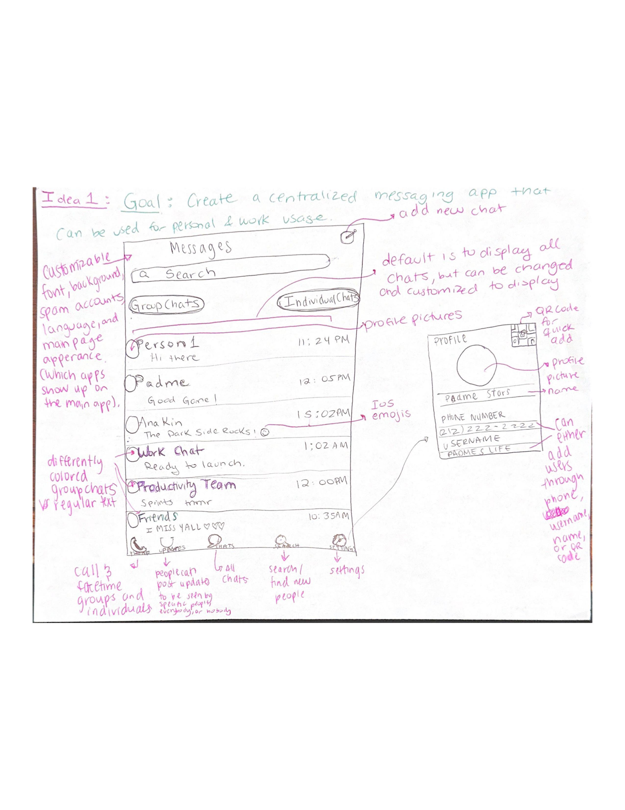
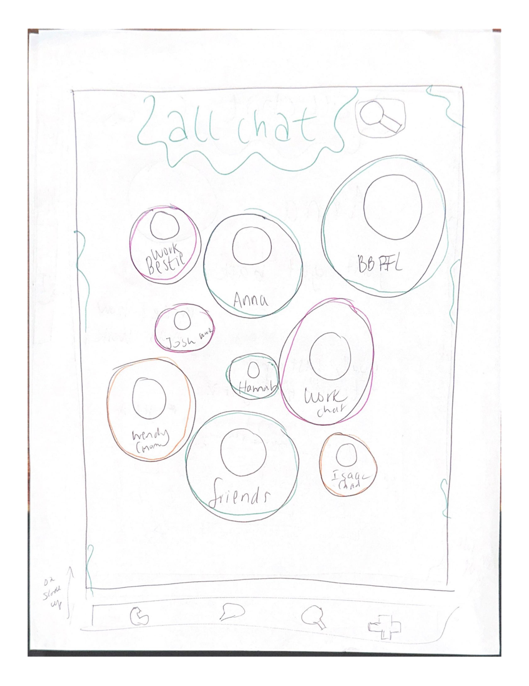
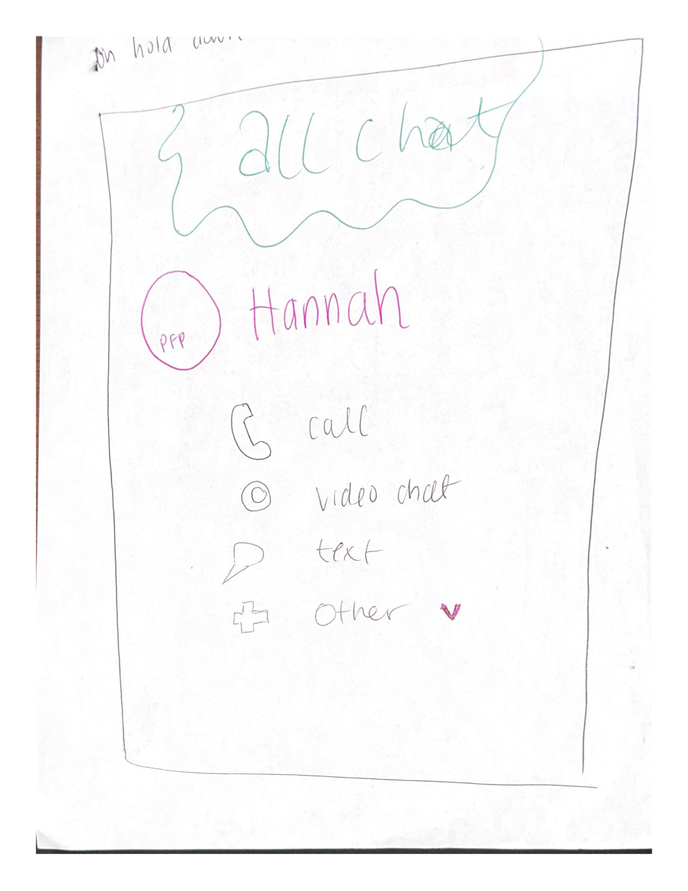
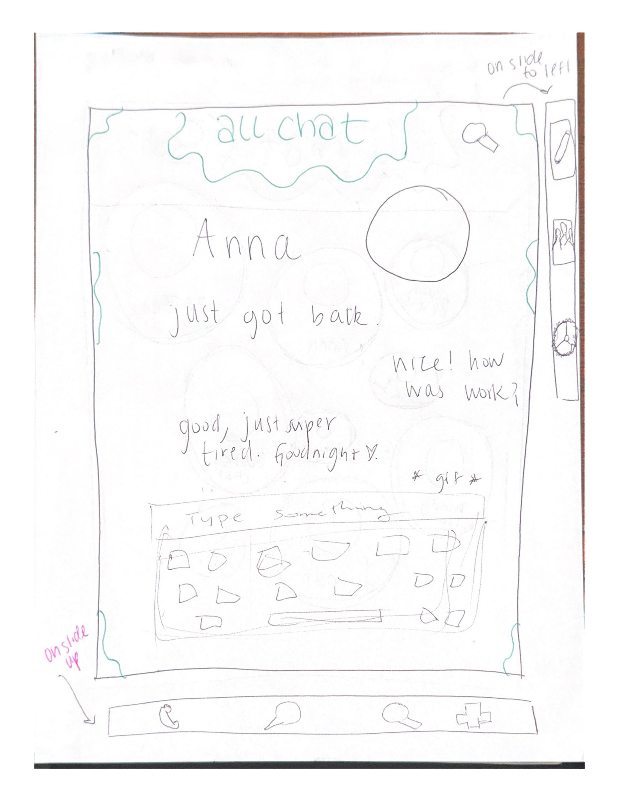
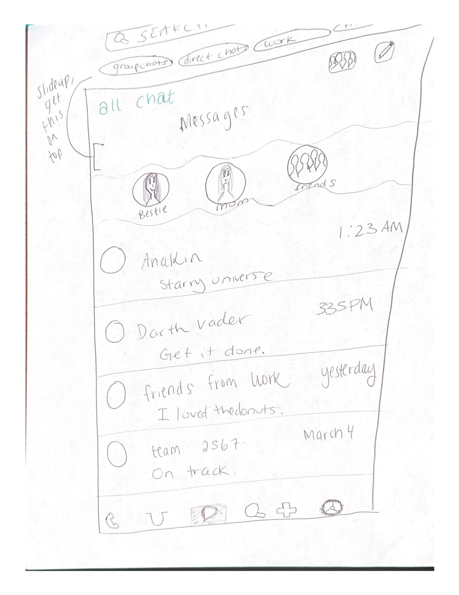
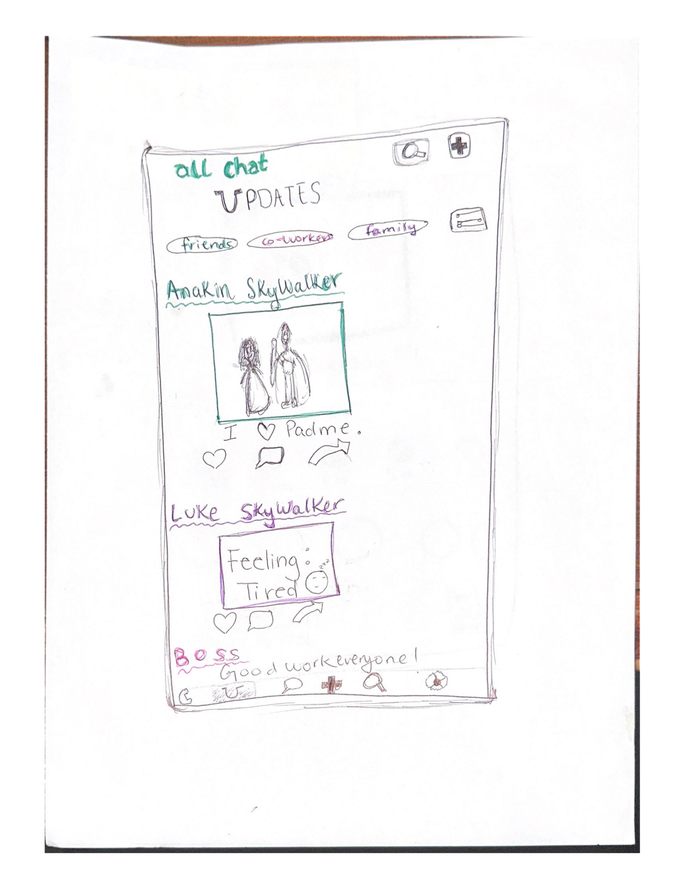
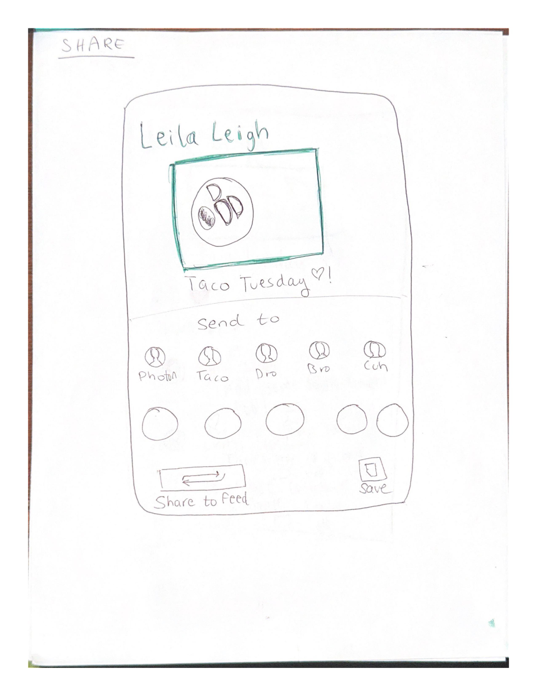
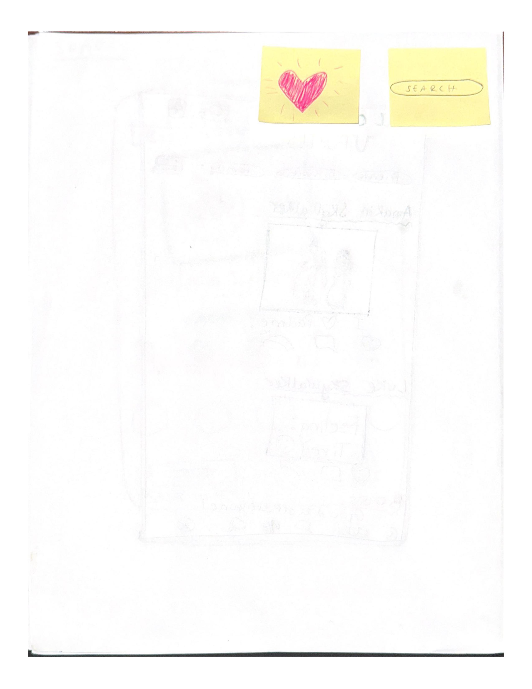
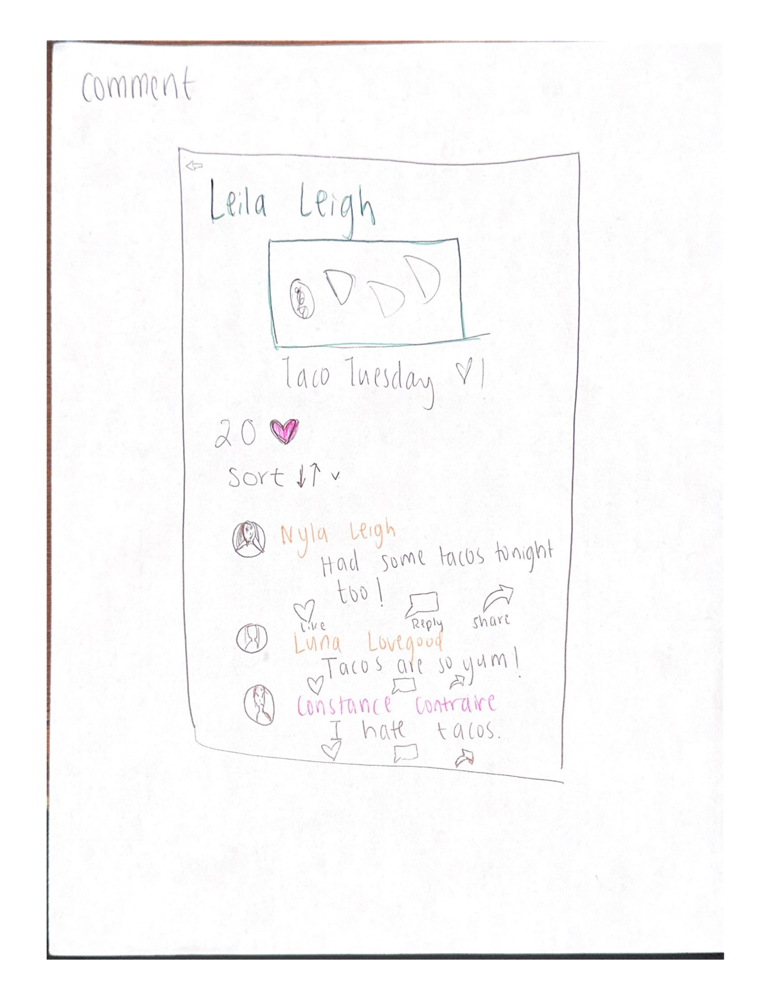

Idea Generation for Chat/IM Apps:
Directions:
Deliverable: 2 prototypes, each with:
- Photos of key prototype "screens" showing your novel features and a simple HTML page that explains them and justifies the improvements (1-2 sentences max per improvement).
- A video of you interacting with your "screens" (as in the Nielsen Norman group video) to carry out the tasks you expect users to perform with your interface. The prototype should be clearly visible in the video, as well as your hands interacting with it.
General Pages :
Note: (these are to be used for under construction and generally for both app prototypes)
 Idea 1:
Idea one pictures:
Home Page:

- This shows the home screen to the app along with most contacted.
- The more you contact somebody, the larger their circle.
- Circles also have different colors depending on whether they're friends, family, work, school, or whatever category users select.
Contact Clicked:

- This shows the contact screen if a contact is clicked on non-stop.
- Users can select a contact and see their profile, which includes their name, picture, and status.
-
From there, users can select an action including:
- calling
- video chatting
- texting
- editing contact, and other functions
Texting:

- This shows a specific text message being sent to someone.
Idea 2:
Idea two pictures:
Home Page

- This shows the home screen to the app, which opens up to the text messages automatically.
Updates Page:

- This shows the "Updates" page, which is where users can post things to their feed.
- Users can select who's able to view their posts if they post anything.
- Users get to choose whose posts they view(friends, family, work, everyone, etc.)

- This shows a post being shared.

- This shows a post being liked(like button)
- Also shows a search button if search is clicked.

- This shows a post being commented on.